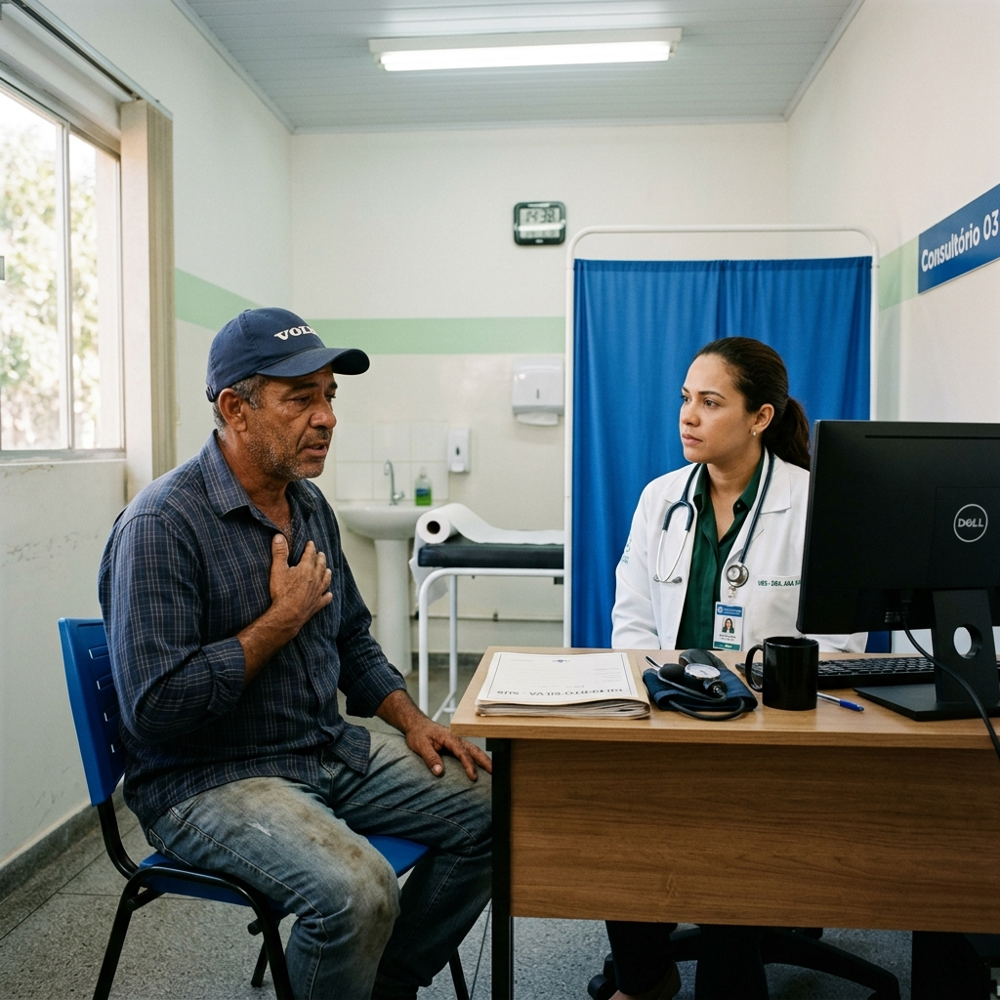
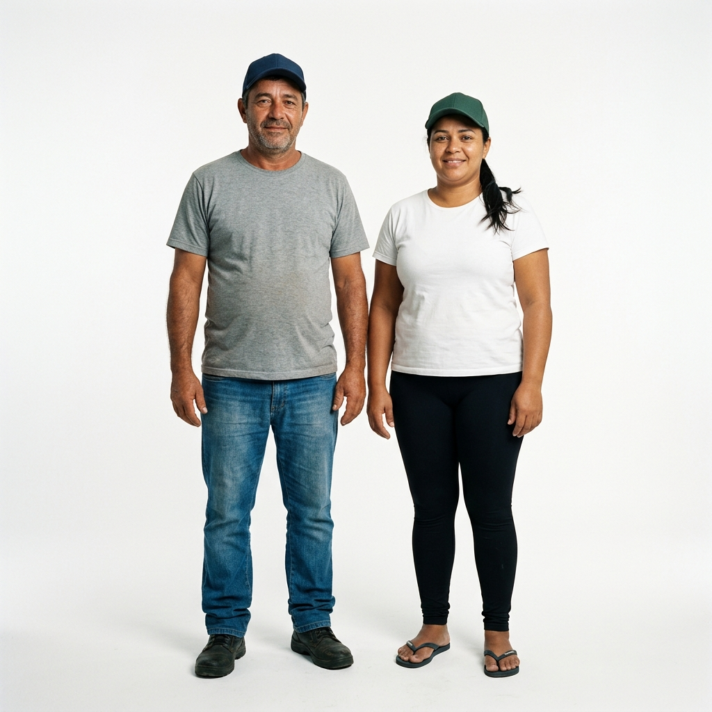

Apresentação do Módulo
Prezado profissional estudante, é com grande satisfação que damos início ao Curso de ATENÇÃO À SAÚDE DA CAMINHONEIRA E DO CAMINHONEIRO NA ATENÇÃO PRIMÁRIA. Bem-vindo ao Módulo I!
Este módulo foi desenvolvido para apresentar a realidade das caminhoneiras e dos caminhoneiros, considerando os desafios de sua rotina, como longos períodos longe de casa, jornadas exaustivas e restrições de tempo para acessar serviços de saúde.
O objetivo é focar o cuidado a essa população na Atenção Primária à Saúde (APS), apoiando a prática dos profissionais de saúde e integrando conhecimentos técnicos e demandas específicas desse público.
Ao longo do módulo serão apresentados conteúdos relacionados ao acolhimento e à organização do cuidado na APS, com destaque para intervenções direcionadas às necessidades das caminhoneiras e dos caminhoneiros, bem como práticas de promoção de saúde. Também serão discutidos fatores como gênero, estilo de vida e condições de trabalho, os quais influenciam o processo saúde-doença.
Cuidar dessa população demanda atenção, formação contínua e respeito. Por isso, esperamos que este conteúdo possa aprimorar sua prática e fortalecer todo o processo de cuidado. Vamos juntos nessa estrada?
Objetivos de Aprendizagem
- Compreender os atributos da Atenção Primária à Saúde na perspectiva do cuidado à saúde das caminhoneiras e dos caminhoneiros.
- Reconhecer o papel da equipe de Saúde da Família na coordenação do cuidado em saúde das caminhoneiras e dos caminhoneiros, considerando as especificidades de acesso e circulação dessa população.
- Reconhecer o papel das equipes de Atenção Primária à Saúde no acolhimento e na promoção do cuidado integral das caminhoneiras e dos caminhoneiros.
- Compreender como os princípios e diretrizes da Política Nacional de Atenção Integral à Saúde do Homem e da Política Nacional de Atenção Integral à Saúde da Mulher se articulam na atenção à saúde da população caminhoneira.
- Compreender as estratégias de educação e de promoção da saúde como componentes do cuidado integral das caminhoneiras e dos caminhoneiros.
- Compreender a vigilância em saúde na perspectiva do cuidado na Atenção Primária à Saúde das caminhoneiras e dos caminhoneiros.
- Identificar estratégias de organização do cuidado na Atenção Primária à Saúde voltadas ao público caminhoneiro.
- Reconhecer questões de gênero que atravessam o trabalho, o viver e o cuidar em saúde das caminhoneiras e dos caminhoneiros.
1.1 A Atenção Primária à Saúde e o cuidado à caminhoneira e ao caminhoneiro
A Atenção Primária à Saúde (APS) é a principal porta de entrada do Sistema Único de Saúde (SUS), sendo responsável pela coordenação do cuidado e organização da Rede de Atenção à Saúde (RAS). No Brasil, tem como modelo prioritário a Estratégia Saúde da Família (ESF), com base territorial e foco na responsabilidade sanitária.
Nesse contexto, compreender os atributos essenciais e derivados da APS contribui para qualificar o cuidado ofertado e fortalecer práticas integrais e coordenadas em diferentes territórios e realidades sociais.
É importante refletir: qual o papel da APS no cuidado dessa população e como garantir o seu acesso integral em todo o território nacional? Ao longo desta unidade, propomos uma reflexão a respeito de como os atributos da APS podem ser mobilizados no cuidado à caminhoneira e ao caminhoneiro, considerando a necessidade de uma organização do cuidado flexível e sensível às suas condições de vida e trabalho.
Você conhece os atributos essenciais e derivados da APS?
Essenciais
Acesso de 1º contato, longitudinalidade, integralidade e coordenação do cuidado.
Derivados
Orientação familiar, orientação comunitária e competência cultural.
Organização dos atributos da APS no cuidado à população caminhoneira
Acesso
de primeiro contato
Garantia
de acesso oportuno e resolutivo a cada
nova necessidade de saúde da
população.
UBS de referência do território adscrito
Garantir acesso oportuno, com agendamento de acordo com a rotina e agenda de trabalho. Isso se aplica para as consultas de rotina e exames laboratoriais e de imagem.
Exemplo: se existe a necessidade de realização de exames laboratoriais solicitados pelo médico da eSF, garantir a realização em tempo oportuno para a avaliação da equipe.
Qualquer unidade de saúde em âmbito nacional
Garantir acesso oportuno e resolutivo para as queixas agudas e espontâneas, bem como para atendimentos eletivos, se necessários.
Exemplo: houve busca ativa de uma pessoa caminhoneira para renovação de receita de medicamentos anti-hipertensivos. A unidade deve garantir acolhimento com escuta sensível e resolutiva, pois a barreira de acesso pode indicar a descontinuidade no tratamento da hipertensão arterial sistêmica (HAS).
Longitudinalidade
A
APS como fonte regular de atenção à
saúde ao longo do tempo, estabelecendo
vínculo e continuidade do
cuidado.
UBS de referência do território adscrito
Garantir acompanhamento contínuo da caminhoneira e do caminhoneiro ao longo do tempo, mesmo diante dos períodos fora do território. A equipe deve manter registro atualizado, acompanhar condições crônicas, monitorar tratamentos e organizar o plano de cuidado de forma compatível com os períodos em que o usuário está no território.
Exemplo: organizar consultas e exames em momentos em que esteja em seu local de residência, além de reforçar a possibilidade de cuidado e acesso a qualquer UBS próxima do seu local de parada e descanso.
Qualquer unidade de saúde em âmbito nacional
Garantir o atendimento qualificado, registrando as informações no prontuário e orientando quanto à continuidade do cuidado.
Exemplo: atendimento de uma pessoa caminhoneira em outra cidade para controle de pressão arterial, com registro da consulta e orientação para seguimento do cuidado.
Integralidade
Oferta
de ações de promoção, prevenção,
diagnóstico, tratamento e reabilitação,
considerando as necessidades de saúde da
pessoa de forma ampla.
UBS de referência do território adscrito
Identificar e abordar as diversas necessidades de saúde da caminhoneira e do caminhoneiro, considerando suas condições de vida e trabalho, incluindo vigilância de agravos relacionados à atividade laboral, saúde mental, saúde sexual e reprodutiva, doenças crônicas e agravos agudos.
Exemplo: realização de avaliação integral de saúde que considere alimentação irregular, privação de sono, sedentarismo, risco cardiovascular e saúde mental.
Qualquer unidade de saúde em âmbito nacional
Ofertar cuidado resolutivo frente às necessidades apresentadas, considerando tanto a queixa imediata quanto outros aspectos relevantes da saúde da população caminhoneira.
Exemplo: durante atendimento por dor lombar, avaliar fatores ocupacionais relacionados à atividade de dirigir por longos períodos e orientar medidas de prevenção.
Coordenação
do cuidado
Capacidade
da APS de organizar o cuidado do usuário
na RAS, articulando diferentes serviços
e níveis de atenção.
UBS de referência do território adscrito
Assumir a responsabilidade pela coordenação do cuidado da pessoa caminhoneira, organizando encaminhamentos, acompanhando resultados de exames e consultas especializadas e integrando informações obtidas em atendimentos realizados em outros serviços da rede.
Exemplo: quando necessário, a eSF realizará encaminhamento para especialista — e deve organizar essa solicitação na RAS, de modo que seja agendada a consulta para período em que o usuário esteja em seu território de residência.
Qualquer unidade de saúde em âmbito nacional
Realizar o atendimento necessário e registrar as informações de forma adequada, orientando o usuário sobre a importância de compartilhar essas informações com sua equipe de referência.
Exemplo: em atendimento em unidade de saúde durante viagem por quadro de crise hipertensiva, deve haver registro da conduta adotada e orientação para seguimento e reavaliação pela eSF de referência no território do usuário.
Orientação
familiar
Consideração
da família como contexto importante para
a compreensão das condições de saúde e o
planejamento do cuidado.
UBS de referência do território adscrito
Considerar o contexto familiar da caminhoneira e do caminhoneiro no planejamento do cuidado, identificando impactos da atividade laboral nas relações familiares e no apoio ao tratamento e autocuidado.
Exemplo: orientar familiares sobre apoio ao controle de doenças crônicas durante os períodos em que a pessoa caminhoneira retorna ao domicílio.
Qualquer unidade de saúde em âmbito nacional
Reconhecer a importância do contexto familiar nas orientações de saúde e, sempre que possível, orientar o usuário a compartilhar informações e estratégias de cuidado com seus familiares.
Exemplo: orientar sobre adesão ao tratamento medicamentoso considerando apoio familiar.
Orientação
comunitária
Capacidade
da APS de reconhecer as necessidades de
saúde da comunidade e desenvolver ações
a partir da realidade social e cultural
do território.
UBS de referência do território adscrito
Reconhecer as especificidades da população caminhoneira presente no território e desenvolver ações de promoção da saúde e prevenção de agravos voltadas a esse grupo.
Exemplo: ações educativas sobre saúde cardiovascular, alimentação saudável e prevenção de IST em locais frequentados por caminhoneiras e caminhoneiros.
Qualquer unidade de saúde em âmbito nacional
Reconhecer que o público caminhoneiro compõe um grupo populacional com necessidades específicas e garantir acolhimento e orientações adequadas à sua realidade laboral e social.
Exemplo: realização de ações de saúde em unidades próximas a estradas ou pontos de parada.
Competência
cultural
Capacidade
dos profissionais e serviços de saúde de
reconhecer e respeitar as
características culturais, sociais e os
modos de vida das populações
atendidas.
UBS de referência do território adscrito
Compreender as particularidades do modo de vida da população caminhoneira, incluindo rotinas de trabalho, alimentação, sono e deslocamento constante, adaptando estratégias de cuidado e acompanhamento.
Exemplo: flexibilização de agendas e organização do acompanhamento que considere os períodos de permanência no território.
Qualquer unidade de saúde em âmbito nacional
Oferecer cuidado respeitoso e sensível às condições de vida e trabalho da caminhoneira e do caminhoneiro, evitando julgamentos e considerando as limitações impostas pela atividade laboral.
Exemplo: orientar estratégias possíveis de autocuidado durante as jornadas de trabalho.
No atendimento da APS, uma pergunta deve orientar sua ação: há risco imediato à saúde desse paciente? A classificação de risco é a ferramenta que auxilia na organização do cuidado na definição de prioridades. Essa avaliação deve considerar não apenas a gravidade clínica imediata, mas também as vulnerabilidades e o contexto de vida do usuário.
Imagine a cena: uma pessoa caminhoneira chega na UBS dizendo que "não está se sentindo bem". Clique nos pontos abaixo para organizar a avaliação:

1.2 Gênero, trabalho nas estradas e políticas de atenção à saúde
Compreender as especificidades das caminhoneiras e dos caminhoneiros requer considerar que sua mobilidade constante e longas jornadas são fatores que impactam diretamente o acesso, o vínculo e a continuidade do cuidado. Nesse contexto, a perspectiva de gênero demarca experiências de adoecimento e interage com outros marcadores sociais, reproduzindo múltiplas condições de desigualdades.
Historicamente, o transporte rodoviário de cargas é um trabalho predominantemente masculino. Padrões de masculinidade que valorizam resistência e autossuficiência contribuem para a baixa procura por ações preventivas, de modo que a busca por cuidado ocorre, em geral, em situações agravadas. A presença crescente de mulheres caminhoneiras adiciona complexidade às demandas de cuidado, evidenciando a necessidade de abordagem sensível às questões de gênero.
Caso clínico – Paradas na estrada

Durante o atendimento, o usuário relata: "Na estrada é difícil manter a rotina, às vezes não dá tempo nem de parar..."
A Política Nacional de Atenção Integral à Saúde do Homem (PNAISH) orienta a APS na organização do cuidado a homens, reconhecendo sua menor utilização dos serviços e maiores taxas de morbimortalidade por causas evitáveis. Recomenda estratégias para ampliar o acesso, fortalecer o acolhimento e considerar o trabalho como fator central na saúde e no adoecimento.
A Política Nacional de Atenção Integral à Saúde da Mulher (PNAISM) orienta o cuidado com base em direitos, equidade e integralidade, considerando determinantes sociais, condições de trabalho, saúde mental e situações de violência. A incorporação dessas diretrizes permite à APS oferecer um cuidado integral, contínuo e equânime às caminhoneiras e aos caminhoneiros.
1.3 Educação em saúde e promoção do cuidado
A educação em saúde é uma estratégia central da APS para promover o cuidado integral e fortalecer a autonomia dos usuários. Mais do que transmitir informações, envolve diálogo, escuta e construção compartilhada, considerando as condições de vida e trabalho nas estradas.
No caso da população caminhoneira, as ações educativas podem abordar temas como doenças crônicas não transmissíveis (DCNT), saúde mental, infecções sexualmente transmissíveis (IST) e vacinação. Para serem mais efetivas, devem ir além das UBS, alcançando espaços estratégicos como postos de combustível e Pontos de Parada e Descanso (PPD).
Parcerias com o Serviço Social do Transporte e Serviço Nacional de Aprendizagem do Transporte (SEST SENAT) podem viabilizar campanhas itinerantes de vacinação e ações educativas em momentos de pausa e descanso. A articulação intersetorial com órgãos do setor de transportes, empresas de logística, sindicatos e associações é estratégica para ampliar o alcance das ações de promoção da saúde.
1.4 Vigilância em saúde e a saúde do trabalhador e da trabalhadora nas estradas
A vigilância em saúde envolve ações contínuas voltadas à identificação, análise e enfrentamento de problemas que impactam a saúde da população, articulando ações de promoção, prevenção e cuidado. Na APS, orientam o cuidado, o planejamento das equipes e a capacidade de resposta às necessidades do território.
No caso do público caminhoneiro, a vigilância assume papel estratégico diante dos riscos relacionados ao trabalho, ao estilo de vida e à intensa mobilidade. No dia a dia, ao atender uma caminhoneira ou um caminhoneiro, você não lida apenas com uma queixa imediata, mas também identifica riscos e contribui para a continuidade do cuidado.
Mesmo em atendimentos breves, é possível incorporar ações de vigilância:
• Verificação da situação vacinal
• Identificação de sinais de fadiga, sofrimento mental e privação de sono
• Estresse ocupacional e fatores de risco cardiovascular
Estudos apontam que caminhoneiras e caminhoneiros apresentam maior prevalência de DCNT, como hipertensão arterial, diabetes mellitus e obesidade, além de agravos relacionados às condições de trabalho, como distúrbios osteomusculares, fadiga crônica e problemas relacionados ao sono. Longas jornadas, privação de sono, pressão por prazos, exposição a acidentes e condições inadequadas de descanso podem gerar estresse ocupacional e problemas cardiovasculares.
No campo da saúde do trabalhador, a vigilância envolve identificar e acompanhar agravos relacionados ao trabalho, como: acidentes de trânsito, lesões musculoesqueléticas, estresse ocupacional e problemas de saúde mental. A APS tem papel importante na identificação desses agravos e na notificação dos casos nos sistemas de informação em saúde.
Lembre-se: a notificação no Sistema de Informação de Agravos de Notificação (SINAN) deve ser realizada independentemente do local de origem do usuário, com orientação para continuidade do cuidado.
1.5 Organização do cuidado, territorialização e articulação da rede
A APS se organiza a partir do princípio da territorialização, que estabelece a responsabilidade das equipes sobre uma população adscrita a um território definido. No caso de caminhoneiras e caminhoneiros, surge um desafio: como garantir a continuidade do cuidado para quem está em circulação constante entre diferentes regiões?
Embora o vínculo esteja associado ao território de residência, esses usuários frequentemente acessam serviços fora de sua área. Para isso, a APS deve adotar estratégias como flexibilização de agendas, orientação sobre serviços disponíveis e fortalecimento da comunicação entre unidades. Agora, vamos retomar o caso clínico "Paradas na estrada" para refletir sobre a continuidade do cuidado na prática:
A APS também atua articulada à Política Nacional de Saúde do Trabalhador e da Trabalhadora (PNSTT), identificando e acompanhando agravos relacionados ao trabalho.
Programas como Agora Tem Especialistas ampliam o acesso à atenção especializada e fortalecem a integração da rede, favorecendo a continuidade do cuidado mesmo em contextos de mobilidade.
Encerramento do Módulo
Ao longo deste módulo, você pôde revisitar aspectos conceituais e organizacionais de serviços da APS que são fundamentais para a promoção do cuidado integral às caminhoneiras e aos caminhoneiros, diante das suas especificidades.
Considerando que os contatos desse público com os serviços de saúde ocorrem, na maioria das vezes, de maneira breve, toda e qualquer oportunidade é única para: acolhimento qualificado, educação em saúde, verificação da situação vacinal ou identificação de agravos relacionados ao trabalho, o que pode fazer grande diferença na trajetória de saúde dessas pessoas.
Cuidar de quem vive nas estradas é, também, reconhecer a importância social do trabalho que realizam e assegurar que o direito à saúde esteja presente em todos os caminhos. Esperamos que este módulo tenha ajudado você a ampliar seu olhar sobre as necessidades da população caminhoneira e a inspirar práticas cada vez mais sensíveis, resolutivas e comprometidas com a integralidade do cuidado.
Referências Bibliográficas
- BRASIL. Ministério da Saúde. Política Nacional de Atenção Integral à Saúde da Mulher: princípios e diretrizes. Brasília, DF: Ministério da Saúde, 2004. Disponível em: https://bvsms.saude.gov.br/bvs/publicacoes/politica_nac_atencao_mulher.pdf. Acesso em: 16 mar. 2026.
- BRASIL. Ministério da Saúde. Secretaria de Atenção à Saúde. Política Nacional de Atenção Integral à Saúde do Homem: princípios e diretrizes. Brasília, DF: Ministério da Saúde, 2008. Disponível em: https://bvsms.saude.gov.br/bvs/publicacoes/politica_nacional_atencao_saude_homem.pdf. Acesso em: 16 mar. 2026.
- BRASIL. Conselho Nacional de Secretários de Saúde (CONASS). Vigilância em Saúde: parte 1. Brasília, DF: CONASS, 2011. (Coleção Para Entender a Gestão do SUS, v. 5). Disponível em: www.conass.org.br/bibliotecav3/pdfs/colecao2011/livro_5.pdf. Acesso em: 16 mar. 2026.
- BRASIL. Ministério da Saúde. Portaria nº 2.761, de 19 de novembro de 2013. Institui a Política Nacional de Educação Popular em Saúde no âmbito do Sistema Único de Saúde (PNEPS-SUS). Diário Oficial da União: seção 1, Brasília, DF, 20 nov. 2013a. Disponível em: https://bvsms.saude.gov.br/bvs/saudelegis/gm/2013/prt2761_19_11_2013.html. Acesso em: 4 maio 2026.
- BRASIL. Ministério da Saúde. Secretaria de Atenção à Saúde. Acolhimento à demanda espontânea: Queixas mais comuns na Atenção Básica. Brasília, DF: Ministério da Saúde, 2013b. (Cadernos de Atenção Básica, n. 28, v. 2). Disponível em: https://bvsms.saude.gov.br/bvs/publicacoes/acolhimento_demanda_espontanea_queixas_comuns_cab28v2.pdf. Acesso em: 13 abr. 2026.
- BRASIL. Ministério da Saúde. Política Nacional de Promoção da Saúde (PNPS): Revisão da Portaria MS/GM nº 687, de 30 de março de 2006. Brasília, DF: Ministério da Saúde, 2014. Disponível em: https://bvsms.saude.gov.br/bvs/publicacoes/pnps_revisao_portaria_687.pdf. Acesso em: 16 mar. 2026.
- BRASIL. Ministério da Saúde. Portaria nº 2.436, de 21 de setembro de 2017. Aprova a Política Nacional de Atenção Básica, estabelecendo a revisão de diretrizes para a organização da Atenção Básica no âmbito do Sistema Único de Saúde (SUS). Diário Oficial da União: seção 1, Brasília, DF, 22 set. 2017. Disponível em: https://bvsms.saude.gov.br/bvs/saudelegis/gm/2017/prt2436_22_09_2017.html. Acesso em: 25 maio 2026.
- BRASIL. Medida Provisória nº 1.301, de 30 de maio de 2025. Institui o Programa Agora Tem Especialistas. Diário Oficial da União: seção 1, Brasília, DF, 31 maio 2025. Disponível em: www2.camara.leg.br/legin/fed/medpro/2025/medidaprovisoria-1301-30-maio-2025-797527-publicacaooriginal-175524-pe.html. Acesso em: 25 maio 2026.
- FREITAS, C. M. et al. Conquistas, limites e obstáculos à redução de riscos ambientais à saúde nos 30 anos do Sistema Único de Saúde. Ciência & Saúde Coletiva, [online], v. 23, n. 6, p. 1981–1996, 2018. Disponível em: www.scielo.br/pdf/csc/v23n6/1413-8123-csc-23-06-1981.pdf. Acesso em: 16 mar. 2026.
- GIOVANELLA, L.; FRANCO, C. M.; ALMEIDA, P. F. de. Política Nacional de Atenção Básica: para onde vamos? Ciência & Saúde Coletiva, [online], v. 25, n. 4, p. 1475–1482, 2020. Disponível em: www.scielo.br/j/csc/a/TGQXJ7ZtSNT4BtZJgxYdjYG/?lang=pt. Acesso em: 25 maio 2026.
- SILVA, A. C. et al. Saúde e qualidade de vida de caminhoneiros. Curitiba: Editora Científica Digital, 2022. Disponível em: https://downloads.editoracientifica.com.br/articles/220308367.pdf. Acesso em: 18 fev. 2026.
- SOUZA, T. S.; VIRGENS, L. S. Saúde do trabalhador na Atenção Básica: interfaces e desafios. Revista Brasileira de Saúde Ocupacional, São Paulo, n. 38, v. 128, p. 292–301, 2013. Disponível em: www.scielo.br/j/rbso/a/ZBBvzDsBkJ3vPFhcJjrq73G/?lang=pt. Acesso em: 25 maio 2026.
- STARFIELD, B. Atenção Primária: equilíbrio entre necessidades de saúde, serviços e tecnologia. Brasília, DF: UNESCO; Ministério da Saúde, 2002. Disponível em: www.dominiopublico.gov.br/download/texto/ue000039.pdf. Acesso em: 16 mar. 2026.